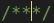
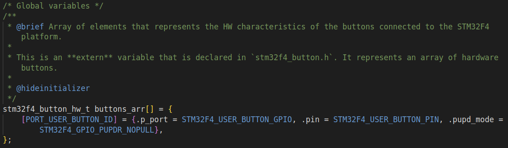
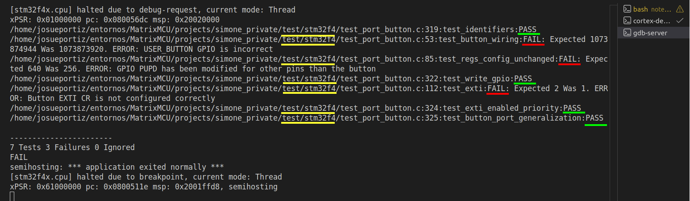
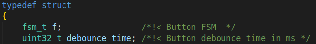
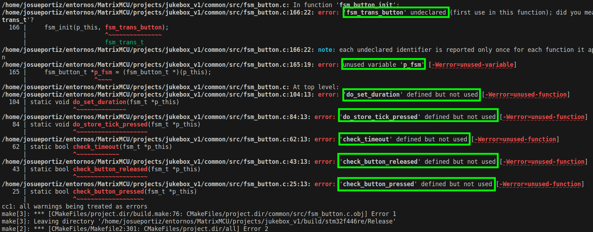

Ya estamos en disposición de programar el bloque que controla la pulsación del botón para encender y apagar el sistema Simone, y para pausarlo. Debes tener a mano en todo momento los documentos referenciados y ver los vídeos sugeridos a fin de entender mejor cómo tienes que escribir el código o realizar montajes.
tt
Bibliografía
“Fundamentos teóricos de sistemas basados en microcontrolador STM32”3
Vamos a desarrollar el botón de control del sistema Simone. Vamos a trabajar con el timer del sistema y máquinas de estado. En esta sección explicaremos los fundamentos de esta librería y posteriormente seguiremos los pasos para desarrollarla. Para desarrollar esta librería vamos a contar con la API.
En esta versión 1, el sistema solo trabaja con el botón de usuario. Las características a destacar de este montaje se muestran en el . El botón de usuario está conectado al pin PC13, por lo que usaremos la interrupción externa EXTI13 para detectar cuando pulsamos y soltamos el botón. La prioridad de la interrupción será 1, la más alta, para poder parar el sistema en cualquier momento.
Parámetro
Valor
Pin
PC13
Modo
Entrada
Pull up/ down
No push no pull
EXTI
EXTI13
ISR
EXTI15_10_IRQHandler()
Prioridad
1
Subprioridad
0
Tiempo anti-rebotes
\(100-200 ms\)
4.1 Características del botón de usuario en Versión 1¶
Estudia y practica con las máquinas de estado. Entiende cómo se definen los estados, las tablas de transiciones, y qué son las funciones de entrada/ comprobación y salida/ actuación. Para ello vuelve a leer el capítulo “2. Introducción a las máquinas de estados en C”6.
Si tienes la oportunidad de abrir un botón pulsador1, seguramente encuentres un diseño mecánico como el de la figura. Se trata de una chapa metálica pegada a un aislante (donde toca el usuario) y colocada sobre un muelle. En la parte inferior, los pines del botón están también en contacto con una chapa metálica. Al presionar, la chapa superior entra en contacto con la inferior y cierra el circuito (cortocircuito), circulando la corriente a través del botón. Cuando se suelta, la corriente deja de pasar (circuito abierto).
Representación mecánica de un botón.
En la figura del esquema vemos el esquemático del botón de usuario B1 en la placa Nucleo-STM32. Cuando pulsamos el botón, este hace cortocircuito con GND, por lo que la tensión en el puerto PC13 del microcontrolador pasa de alto a bajo (flanco de bajada).
Esquema del circuito del botón en la placa Nucleo-STM32F446RE.
Como habrás podido intuir, el muelle genera inestabilidades cuando se pulsa, esto es a lo que llamamos rebotes (bounces en inglés). Estos rebotes son molestos porque se pueden interpretar como múltiples pulsaciones del usuario, por lo que hay que poner algún mecanismo para filtrarlos. Se pueden hacer mecanismos HW como un filtro paso bajo o, como en nuestro caso, se pueden implementar mecanismos SW.
En SW hay varias formas de implementar dicho mecanismo. En nuestra propuesta lo haremos a través de la definición de un tiempo de guarda que obliga a ignorar todo lo que pasa en ese intervalo. Fíjate en el supuesto de la figura de rebotes. Para el proyecto vamos a considerar que la pulsación empieza cuando la ISR detecta el flanco de bajada, y hasta que se detecta un flanco de subida válido. En la figura, hay una pulsación de usuario, y la mecánica del botón hace que haya 2 rebotes bien definidos. El primer rebote no se detecta porque está dentro del tiempo de guarda. No obstante, este tiempo no es lo suficiente grande y se nos cuela el segundo rebote. Esta figura nos servirá como ejemplo para entender el desarrollo de la FSM.
Ejemplo de 2 rebotes en una pulsación con tiempo de anti-rebotes bajo.
Salvo que tengamos mucha experiencia jugando a videojuegos 😅, no seremos muy rápidos pulsando el botón. Dejando un tiempo de guarda entre \(100-200 ms\) debería ser suficiente, pero depende del deterioro de nuestro botón y quizás debamos ajustarlo haciendo pruebas en el laboratorio con el osciloscopio. Ya estamos preparados para implementar la FSM.
Tenemos que entender que estamos desarrollando una librería. Así lo vamos a hacer con todos los bloques del sistema. ¿Qué quiere decir esto? Tenemos que pensar que una librería es una entidad superior que me proporciona “cosas”. Pueden ser funciones, o elementos (estructuras). Me puede proporcionar tantos como necesite. El desarrollo de la librería es ajeno al botón que vamos a usar (irá en el COMMON, es una lógica común, genérica, independiente del HW). Puedo tener \(1\) botón, o \(N\) botones. Cada vez que quiera usar un botón, a este le asociaré una FSM de botón. Las particularidades de dónde está conectado este nuevo botón, sus características físicas (tiempo de rebote), etc., son cosas específicas del HW, por lo que estarán en PORT. La lógica la vamos a hacer, siempre que se pueda, con máquinas de estado. El botón implementa su propia máquina de estados. Esta filosofía es la que mantendremos a lo largo de todo el proyecto.
Note
Vamos a empezar por la parte portable PORT de control y acceso al HW. Empezaremos con las cabeceras .hy seguiremos con la implementación de las funciones de los ficheros fuente .c. Para comprobar que todo funciona correctamente, pasaremos el test unitario de la parte PORT. Luego, pasaremos a la parte COMMON de la librería, que es la lógica común a todos los sistemas. Empezaremos con las cabeceras y seguiremos con la implementación de las funciones de los ficheros fuente. Para comprobar que todo funciona correctamente, pasaremos el test unitario de la parte COMMON, y finalizaremos con el ejemplo de uso de la librería.
Las cabeceras .h van a se nuestro “contrato con el usuario”, y en los ficheros fuente .c implementaremos las funciones. Este es el ciclo de desarrollo que vamos a seguir en todo el proyecto.
(a) Estructura del HW del botón en PORT, (b) Estructura de la FSM del botón en COMMON.
Las figuras de estructuras HWy SW muestran las estructuras que vamos a necesitar para el botón. La estructura del HW del botón en PORT. El PORT de otro microcontrolador podría implementar internamente una estructura diferente, por eso está dentro de la carpeta stm32f4. Por ejemplo, al portar el código para PC no tendría sentido definir la estructura de una GPIO. La estructura de la FSM del botón en COMMON se muestra en la figura de la FSM.
Ahora sí, comencemos. Preparemos el proyecto para poder añadir el botón:
Descarga del repositorio de la asignatura los ficheros correspondientes a la parte PORT de la librería del botón correspondientes a la versión V1: https://github.com/sdg2DieUpm/Simone/tree/simone_v1. Solo descarga por ahora: port_button.h, stm32f4_button.h y stm32f4_button.c y colócalos en las carpetas correspondientes de tu proyecto. No añadas los ficheros de la parte COMMON.
Coloca cada uno donde corresponde: include, o src. Ten en cuenta que algunos ficheros de PORT están en la carpeta stm32f4 porque sus funciones reciben o devuelven estructuras específicas de la Nucleo-STM32F446RE.
Verás que no compila, y es que solo se te proporciona cierta parte del código. Los prototipos de gran parte de las funciones públicas no están definidos.
Vamos a implementar el contrato con el usuario de la parte dependiente del HW de librería del botón. Esto es, qué interfaz vamos a proporcionar al usuario para que pueda usar la librería y crear tantos botones como necesite. Lo haremos, cómo no, para la placa Nucleo-STM32F446RE.
Durante todo el desarrollo del proyecto, si detectas que falta algún#define, o#include, o declaración de variable que sea necesaria o que necesite, hazlo. Lo que aquí se expone no es algo inmutable, aunque sigue unas buenas prácticas.
La figura de plantilla representa las secciones de una plantilla genérica de cabecera que puede utilizar a lo largo del proyecto. El orden no es un estándar, ni las secciones que ahí aparecen. No obstante, sí es muy conveniente ser ordenado y metódico en programación. Sí es importante el orden en los siguientes casos:
La inclusión de cabeceras ha de ser lo primero. Es importante el orden en caso de existir dependencias entre ellas.
Es aconsejable definir las etiquetas, macros, enumerados… justo después para que puedan ser utilizados en la declaración y definición de variables. Solo pondremos en el .h aquéllas que queramos que sean visibles y utilizadas por otros ficheros. En caso contrario, lo colocaremos en el .c.
Si se declara algún tipo nuevo de variable, hay que hacerlo antes de que se use en el prototipo de alguna función. Las funciones que no queramos que sean accesibles por otros ficheros no tendrán prototipo, y escribiremos y documentaremos directamente en el .c, además, se definirán como static.
Sugerencia de plantilla genérica de una cabecera.
Nuestro botón es el botón de usuario B1 de la placa (el azul) será el botón para arranque y parada del juego. Está conectado a la GPIO PC13. Si lo queremos ver en el osciloscopio, tendremos que pinchar en el pin indicado en el header-Morpho izquierdo, como marca la figura “Pinout y funciones header -Morpho izquierdo.” del libro de fundamentos teóricos 3. El esquemático del circuito del botón es el que se mostró en la figura del esquemático.
Esta cabecera depende del HW pero no de las particularidades del microcontrolador STM32F446RE. En ella vamos a definir las funciones que el usuario podrá usar para gestionar el botón. Fíjate que todas las funciones reciben el identificador del botón y solo pueden recibir o devolver variables que NO dependan del microcontrolador. Vamos a seguir los siguientes pasos:
Vamos a definir (#define) dos valores que nombraremos en un consenso con nosotros mismos. Puede cambiarlos si lo desea, pero deberán ser los mismos que luego use en el resto del proyecto ¡y en los test, si los cambias, tendrás que tocar los ficheros de test también! Los valores son:
PORT_USER_BUTTON_ID: valor numérico natural que será el identificador del botón para indicar arranque y parada del juego Simone. Si es nuestro primer y/ o único botón del sistema, le asignaremos el 0.
PORT_USER_BUTTON_DEBOUNCE_TIME_MS: tiempo del anti-rebotes del botón en \(ms\).
Escribe los prototipos de las funciones públicas que aparecen en la API del fichero port_button.h.
Puede ser buen momento ahora para documentar las funciones con Doxygen. Para que aparezca en la API el campo y su definición, hay que poner /*!< aqui_la_definicion */ junto al nombre del campo como muestra la figura de ejemplo de Doxygen en enumerados.
Comentario de Doxygen en las claves de un enumerado.
Puedes partir de los ejemplos dados en el fichero port_system.h y ayudarse con extensa documentación online. Puede hacerlo en español o inglés2.
Note
Podemos tener ayuda para autocomentar parcialmente el código con Doxygen. Compruea si tienes instalada la extensión llamada Doxygen Documentation Generator —a veces se instala junto con otras extensiones—; si no la tienes, puedes instalarla. Con esta extensión, si te colocas justo en la lı́nea encima del nombre de la función y escribes: barra, asterisco, asterisco, enter, colocando el cursor en la tercera posición, como en la imagen, para darle a enter, se genera automáticamente un esqueleto para poder completarlo. También se puede hacer si, colocados justo encima de la función, damos botón derecho → Generate Doxygen Comment.
Ya hemos acabado con el encabezado que interactúa con el HW del botón y que no depende del microcontrolador. Todavía dará errores al compilar. Vamos ahora a programar la cabecera que sí depende del microcontrolador stm32f4_button.h.
Esta cabecera depende del HW y del microcontrolador STM32F446RE. En ella vamos a definir la función que permitirá al usuario asignar una GPIO al botón. En la versión V5, si lo necesitas, puedes añadir más funciones que dependan del microcontrolador. Vamos a seguir los siguientes pasos:
Como vamos a hacer uso de funciones de control de las GPIO, vamos a incluir stm32f4xx.h, que nos da acceso a los registros.
Vamos a definir (#define) los valores de la GPIO y el pin al que está conectado el botón, y que se indican en la tabla resumen del botón:
STM32F4_USER_BUTTON_GPIO: GPIO a la que está conectada el botón de usuario en la placa. Pon el nombre de la GPIO. Por ejemplo: GPIOH, si estuviese conectado a la GPIO H. Este nombre, es el de la estructura de CMSIS y se define en stm32f4xx.h. Puedes hacer CTRL + click sobre el nombre de la GPIO para ir a su definición.
STM32F4_USER_BUTTON_PIN: pin/ línea de la GPIO del botón. Es un número entero que va de 0 a 15.
En el fichero tenemos que declarar también una estructura llamada stm32f4_button_hw_t (ver la figura del struct). Esta estructura se pone en el .h y se hace pública para que pueda ser usada por la ISR del botón en el fichero interr.c. Esto es así porque a las ISR no se les puede pasar argumentos. En ella se definen los campos que se muestran en la figura.
Esta estructura es genérica para cualquier botón que vayamos a usar, no solo el de usuario B1, sino cualquiera que desee añadir más tarde.
El campo flag_pressed nos indica si el botón se ha pulsado, o no. Ya vimos que cuando pulsamos nuestro botón se produce un flanco de bajada por cómo están conectados sus pines (ver figura de rebotes). Son las ISR las que hacen esta interpretación.
Vamos declarar un array de estructuras de tipo stm32f4_button_hw_t como extern que se definirá en el fichero fuente stm32f4_button.c. Este array contendrá las características de todos los botones que tengamos en el sistema.
externstm32f4_button_hw_tbuttons_arr[];
Puede ser buen momento ahora para documentar la función, la estructura y sus campos, y los #define con Doxygen.
Ya hemos acabado con el encabezado (header) que interactúa con el HW del botón y depende del microcontrolador. Todavía dará errores al compilar. Vamos ahora a implementar todas las funciones prototipadas aquí y en port_button.h.
Si observas la API, verás que la FSM del botón hace llamadas a funciones que empiezan por port_. Estas son funciones portables, y el usuario que quiera usar la librería de la FSM del botón debe programarlas y adaptarlas a su HW.
Vamos a portar las funciones necesarias para usar la librería botón y comprobar que la parte HW está bien programada. Lo haremos, cómo no, para la placa Nucleo-STM32F446RE. Ya tenemos las cabeceras HW del botón: las que no dependen del microcontrolador (port_button.h) y las que sí (stm32f4_button.h). Vamos a programar los ficheros fuente de la parte PORT, que todos estarán en el fichero stm32f4_button.c. Deberás implementar o completar todas las funciones públicas de las que ya has declarado el prototipo en el encabezado. Posteriormente completarás la ISR asociada al pin del botón que aparece en la API del fichero interr.c.
Incluye las librerías necesarias, si falta alguna, según indique la API.
Vamos a definir la variable globalstm32f4_button_hw_t buttons_arr\[\] que se declaró en el .h. Se trata de un array que no especifica el número de elementos que tiene, pero cada uno será de tipo stm32f4_button_hw_t, que representa al HW de cada botón que tengamos en nuestro sistema.
La declaración e inicialización de este array podemos hacerla a la vez, que será lo más aconsejable. También podríamos hacer solo la declaración e inicializar los valores de cada botón en una función aparte —que ahora mismo no tenemos definida—. Convendría recordar las secciones correspondientes de los vídeos de SDG1: inicialización de arrays y arrays de estructuras.
Asigna los valores del botón PORT_USER_BUTTON_ID utilizando los #define de stm32f4_button.h. Deberá quedarte algo como lo de la figura de arrays. Si tienes más botones en el sistema, simplemente añadirías una fila para cada botón con sus características correspondientes.
Array de botones con las características del botón de usuario.
Se os proporciona ya codificada la función _stm32f4_button_get(). Se trata de una función privada que devuelve un puntero a la estructura del botón que se le pasa como argumento. Esta función, aunque prescindible, es útil para poder hacer un código más legible y acceder a los campos de la estructura del botón de forma más sencilla desde otras funciones del fichero stm32f4_button.c. ¡Recuerda que esta función es privada y por tanto debe aparecer codificada antes de cualquier función que la utilice!
Si el botón no existe, la función devuelve NULL. Esto es habitual en funciones que devuelven punteros y es muy útil para detectar errores en la programación.
Completa la función port_button_init() como se indica en la API. Fíjate cómo la parte de código proporcionada define la variable local \*p_button que nos permite acceder al botón. También podría haberse hecho con acceso directo al elemento del array de botones buttons_arr\[button_id\], pero es más elegante, seguro, y legible hacerlo con la función _stm32f4_button_get().
Recuerda que es muy importante indicar en el modo de la interrupción del botón que, además de detectar ambos flancos (subida y bajada), debe habilitar la petición de interrupción (registro EXTI_IMR).
Codifica la función pública declarada en el fichero port_button.h siguiendo la API: port_button_get_pressed().
¡Ya hemos acabado con la implementación de la parte HW stm32f_button.c! Ahora solo queda la ISR asociada al pin del botón para poder probarlo. Vamos a ello.
Abre el fichero interr.c e implementa la ISREXTI15_10_IRQHandler. Hay que implementar la parte correspondiente a la Versión 1 que indica la API solo.
Copia este esqueleto en el documento:
voidEXTI15_10_IRQHandler(void){/* ISR user button */if(EXTI->PR&BIT_POS_TO_MASK(buttons_arr[PORT_USER_BUTTON_ID].pin)){}}
Completa la ISR EXTI15_10_IRQHandler como se indica en la API.
Esta ISR es la misma para cualquier elemento que se conecte en las líneas 10-15, y por ello debe identificar cuál de ellas ha sido. Es por eso que tenemos la línea EXTI->PR & BIT_POS_TO_MASK(buttons_arr[PORT_USER_BUTTON_ID].pin), para asegurar que es el botón de usuario.
Esta línea comprueba si el bit de la posición del pin del botón está activo en el registro Pending Register EXTI_PR. Si es así, es porque se ha producido una interrupción en el pin del botón. Es muy importante que borremos el flag de interrupción escribiendo un 1 en el bit correspondiente del registro EXTI_PR.
Debemos identificar si el flanco que ha producido la interrupción es de subida o bajada, pues el montaje HW de cada botón puede ser distinto.
Si queda algo por documentar puede ser buen momento ahora.
Si ahora compila, el código no debería tener ningún error. ¡Ya hemos acabado con la implementación de portado del botón!. Vamos a probarlo con el test unitario de la parte PORT.
Veremos que la lógica de las máquinas de estado hacen uso de las funciones portables que acceden al HW del dispositivo. Es por ello que es importante comprobar primero que la parte PORT funciona correctamente. Vamos a hacer el test de HW del código que hemos desarrollado de la librería del botón y probar que funciona antes de continuar con la implementación de la lógica de la parte de la FSM.
¡Importante! Los test que se proporcionan comprueban solo algunos aspectos esenciales, pero no son exhaustivos. Es responsabilidad del alumno comprobar que el sistema final funciona correctamente. Ten a mano y revisa el capítulo “Test unitarios y ejemplos de integración” del libro de fundamentos teóricos 3.
En esta sección vamos a practicar con el concepto de depuración (debugging) (recordar ejercicio de clase en SDG1 y las pruebas de la Guía de instalación con blink7).
La herramienta más importante y cómoda que tenemos para depurar es el IDE que usemos. En nuestro caso, como VSCode no es un IDE en sí mismo, sino un editor de texto vitaminado, tenemos que usar extensiones. La extensión Cortex-Debug para VSCode es la que nos ayudará a depurar.
A veces no nos queda otra forma para depurar que imprimir texto por pantalla (cuando esta existe). Recuerde de la Guía de instalación7 que algunos dispositivos basados en ARM proporcionan una consola de ITM. ITM es una aplicación de ARM que permite, entre otras cosas, el uso de la función printf() en depuración con la placa. También existen alternativas como el semihosting, que envía mensajes a través de la pestaña de Debug Console de VSCode. Esta es la opción que tenemos configurada en nuestro proyecto. No hay que abusar de ellas, porque no vale para todo. Tendremos que acudir inevitablemente a ver los valores de los registros en algún momento. Bien es cierto que, una vez el proyecto está funcionando en producción, puede ser útil tener trazas (impresas, LEDs, ficheros de log…) para saber qué está pasando en caso de fallo.
Pulsa sobre el icono de depuración y selecciona Clean and Debug sobre la plataforma que queramos depurar (stm32f446re).
En el desplegable que se abre, selecciona el test test_port_button. Se compilará y se cargará en la placa.
Inmediatamente se habrá parado en la primera línea del test. Continúa la depuración () para ejecutar el test por completo, o pon puntos de parada si deseas ir paso a paso.
Se habrá impreso por la terminal del gdb-server el resultado de las pruebas de los tests. Debería haber pasado todos los tests. Si no, lee el mensaje de error y corrige tu código hasta que pasen todas las pruebas. Si no pasan las pruebas, no continúes.
La depuración se queda en bucle en la instrucción exit(UNITY_END()). Para terminar la depuración pulsa () y repite el proceso hasta que pasen todos los test.
Si algún test genera una situación de comportamiento inesperado, puede ser que no termine de ejecutarse. Comprueba dónde se queda pausando la depuración, y lee los mensajes de error que te proporciona el test.
Un ejemplo de ejecución del test se muestra en la ejecución de test de la figura. En este caso, la segunda comprobación ha fallado indicándonos que la GPIO elegida para el botón no es la correcta. Luego aparecen más errores, pero son derivados de este. Corrigiéndolo, pasan todos los test correctamente. Por eso, se recomienda arreglar los errores en el orden en que aparecen.
Ejecución de los test unitarios de la parte `PORT` del botón.
¡Ya hemos acabado con la parte PORT del botón! Vamos ahora a implementar la parte COMMON de la librería del botón.
Antes de empezar vamos a partir de una serie de consideraciones.
La FSM almacena la duración de la última pulsación de botón.
El usuario debe solicitar/ comprobar la duración mediante la función fsm_button_get_duration().
El valor de inicio de duración al arrancar la FSM, y el de reinicio, debe ser \(0 ms\).
Un valor de \(0 ms\) significa que no ha habido una nueva pulsación del botón.
El usuario debe reiniciar el valor de duración una vez leído, de lo contrario, este valor puede ser malinterpretado por el usuario si se realizan sucesivas comprobaciones sin haber pulsado el botón. En tal caso estaríamos leyendo información del pasado. Para reiniciar el valor se debe llamar a la función fsm_button_reset_duration().
Visto de otro modo, el “flag” de estado de esta FSM es la variable duración. Una duración de 0 significa que no ha habido ninguna nueva pulsación de botón. Un valor distinto de 0 representa que ha sido pulsado y el valor es su duración. Es por tanto responsabilidad del usuario borrar este “flag” de estado.
La FSM contiene información del identificador (ID) del botón. Este ID es único y gestionado por el usuario en el PORT. Ahí es donde el usuario proporciona identificadores e información HW (GPIO a la que está conectado y tiempo de anti-rebotes) para todos los botones de su sistema.
Máquina de estados del botón.
Nuestra librería implementa la lógica de la FSM mostrada en la FSM de la figura y que llamaremos fsm_button (en los ficheros .c y .h). Tiene 4 estados porque implementa un mecanismo anti-rebotes SW. Los rebotes de botón o pulsaciones muy rápidas que duren menos que el tiempo de anti-rebote (debounce_time), se filtran. Los estados, como muestran la figura, son:
BUTTON_RELEASED: es el estado inicial de la FSM. En este estado la FSM está comprobando constantemente si se ha producido un flanco de bajada, i.e., si se ha pulsado el botón. Cuando este se produce, guarda el instante actual y calcula el timeout del tiempo de guarda.
BUTTON_PRESSED_WAIT: se queda esperando en este estado hasta que ha pasado el tiempo de guarda de anti-rebotes, i.e., hasta que el instante actual es mayor que el timeout. Este es el anti-rebote de bajada. Al salir, no hace nada (función, NULL).
BUTTON_PRESSED: en este estado se queda mientras no se suelte el botón. Saldrá de él cuando se haya detectado un flanco de subida. Ya ha pasado el tiempo de guarda, por lo que si es un rebote, se detectará como falso (ver ). Cuando el flanco de subida se produce, se calcula la duración de la pulsación.
BUTTON_RELEASED_WAIT: se queda esperando en este estado hasta que ha pasado el tiempo de guarda de anti-rebotes, i.e., hasta que el instante actual es mayor que el timeout. Este es el anti-rebote de subida. Al salir, no hace nada (función, NULL).
La parte COMMON de nuestra librería trabaja con la estructura (struct) pública que se muestra en la figura (b) de estructuras. Con pública queremos decir que está declarada en el fichero .h y no el el .c, por lo que otros ficheros pueden declarar variables de este tipo.
Lo primero, descarga del repositorio de la asignatura los ficheros correspondientes a la parte COMMON de la librería del botón correspondientes a la versión V1: https://github.com/sdg2DieUpm/Simone/tree/simone_v1. Solo descarga lo que faltaba por implementar, es decir, los ficheros fsm_button.h y fsm_button.c y ponlos en las carpetas correspondientes de tu proyecto.
Ahora, vamos a completar la cabecera de la FSM del botón, fsm_button.h.
Incluye las librerías necesarias, si falta alguna, según indique la API.
Ahora vamos a definir el enumerado con los nombres de los 4 estados de la FSM. Escribe un enumFSM_BUTTON con los nombres de los estados del diagrama de la separados por ,. No olvides poner un ; al final del enum.
Es buen momento para aprovechar a documentar la estructura, del mismo modo que se hizo anteriormente y se muestra en la figura de comentario.
Comentario de Doxygen en un campo de una estructura.
Continuamos con las declaraciones de funciones públicas de la librería. Procedamos:
Escribe los prototipos de las funciones públicas que aparecen en la API del fichero fsm_button.h.
Como puedes intuir, estas no son todas las funciones de la librería, sino solo aquellas que podrán ser llamadas desde el exterior. Hemos establecido un criterio general por el que diremos que, si una función va a ser accesible desde el exterior, el nombre de la función debe empezar por fsm_.
Puede ser buen momento ahora para documentar las funciones con Doxygen. En este caso, la documentación va encima del nombre de cada función.
Ya hemos acabado con el encabezado. Quizás de errores al compilar. Vamos ahora a programar el fichero fuente fsm_button.c.
Vamos a proceder con la implementación de las funciones del botón. Deberás implementar todas las funciones públicas de las que ya has declarado el prototipo en el encabezado, y el resto de funciones privadas que aparecen en la API del fichero fsm_button.c. También definiremos las variables globales y estructuras que sean necesarias. ¡Recuerda que las funciones privadas no se declaran en el .h!
Lo primero que debe aparecer es la inclusión de cabeceras; en nuestro caso fsm_button.h, port_button.h, y port_system.h como indica la API.
Ahora empezamos a codificar las funciones privadas de la FSM. Empezaremos con las funciones de entrada o comprobación de la FSM. Hemos establecido un criterio general por el que, si una función es de entrada o comprobación, será privada y estática, y el nombre de la función va empezar por check_ (porque comprueba la condición de salto de la máquina de estados). Es muy importante aquí que hayas entendido bien los ejemplos con FSM de los tutoriales “Capítulo 2. Introducción a las máquinas de estados en C” y “Capítulo 3. Máquinas de Estados Combinadas”.
IMPORTANTE
Si te fijas en la API, todas las funciones de la máquina de estados reciben el mismo argumento: fsm_t*, un puntero a una máquina de estados.
fsm_button_t *p_fsm = (fsm_button_t *)(p_this);
Esto es ası́ porque la librerı́a fsm.c no sabe qué tipo de máquina de estados es. Nosotros sabemos que esta máquina de estados es una máquina con esteroides porque incluye, además, la estructura del botón. En realidad es tipo fsm_button_t*, un puntero a una máquina de estados de la estructura del botón, que por tener en su primer campo una fsm_t*, podemos hacer un cast y convertirla. Ası́ pues, en las funciones de la máquina de estados, siempre tendremos que recuperar nuestro tipo haciendo este cast como nos dice la API y hace, por ejemplo, la función fsm_button_init(). En el resto de funciones que no se pasen a la librerı́a fsm.c, trabajaremos directamente con el tipo fsm_button_t* que hemos creado.
Codifica la función check_button_pressed() como se indica en la API.
Codifica la función check_button_released() como se indica en la API.
Codifica la función check_timeout() como se indica en la API.
Puede ser buen momento ahora para documentar las funciones con Doxygen. En este caso, como las funciones no están declaradas en el encabezado, la documentación irá en el .c, encima del nombre de cada función.
Seguiremos con las funciones de salida o actualización de la FSM. Hemos establecido el criterio de que, una función de salida o actualización será privada y estática, y el nombre de la función empezará por do_ (porque va a hacer algo). Hay veces que no hay que hacer nada, por lo que para la librería fsm.c será suficiente que apunte a NULL. Esto en el diagrama de la se ha representado como n/a.
Codifica la función do_store_tick_pressed() como se indica en la API.
Codifica la función do_set_duration() como se indica en la API.
Documenta las funciones con Doxygen. En este caso, igual que antes, la documentación irá en el .c, encima del nombre de cada función.
Error de compilación durante el desarrollo de fsm_button.c.
Todavía no hemos acabado con el desarrollo, pero vamos a compilar para ir depurando errores. Compile el programa. Verá errores parecidos a los que se muestran en la figura de error. El compilador a veces nos da alguna sugerencia de corrección, pero no tienen por qué ser correctas. Nos dice que:
Hay una variable que no está declarada y que se llama fsm_trans_button. Se trata de la tabla de transiciones. Aún tenemos que escribirla.
Todas nuestras funciones check_ y do_ están declaradas pero no se usan.
¿Por qué no dice lo mismo de las funciones públicas que están declaradas en el .h y tampoco se usan? Pues porque son públicas. El compilador no sabe quién las podrá usar y ahí están declaradas para quién la pueda llamar. ¿Por qué en el .c da error? Porque en el Makefile —donde están las reglas de compilación—, igual que tenemos el flag para que nos dé error si la variable no se usa, lo mismo pasa con las funciones. Esto es útil para evitar generar códigos sucios con funciones que no sirven.
¿Quién va a usar las funciones de la máquina de estados? Pues las va a usar, mediante indirección, la librería fsm.c. ¿Cómo? Porque le vamos a pasar a la función fsm_fire() la tabla de transiciones. Y es ahí, donde vamos a “usar” estas funciones. ¿Y dónde se llama a fsm_fire? Ya lo haremos, pero se hace en fsm_button_fire(), que a su vez es llamada por el main.
Si las usásemos, aparecería el error de que hay funciones que no están declaradas (implicit declaration). Son las llamadas a funciones del PORT, que más tarde codificaremos.
Mucha información hasta ahora, pero verá cómo se aclara todo enseguida. Vamos a codificar la tabla (array) de transiciones de la FSM del botón.
Definimos static fsm_trans_t fsm_trans_button\[\] = ... justo después de la función do_set_duration().
Recuerda que cada fila de la tabla de transiciones tiene la forma: EstadoIni, FuncCompruebaCondicion, EstadoSig, FuncAccionesSiTransicion. No olvides añadir la fila -1, NULL, -1, NULL que sirve a la librería fsm.c para detectar el fin de la tabla.
¿Por qué es importante haber colocado la tabla en este punto? Bueno, puede ser en cualquier punto después de las funciones check_ y do_, porque de lo contrario, de estar más arriba, al compilar, la tabla de transiciones estaría haciendo referencia a funciones que todavía no se sabe que existen (¡porque son privadas y no están en el .h!).
Si ahora compilas, verás que han desaparecido muchos errores. Ya queda menos para acabar la implementación de la librería de la máquina de estados. Prosigamos:
Codifica la función fsm_button_get_duration() como se indica en la API. Esta función nos servirá en el programa principal para preguntar cuánto tiempo ha durado la pulsación.
Codifica la función fsm_button_reset_duration() como se indica en la API. Con esta, reiniciaremos el valor de la duración a \(0 ms\) tras leerlo.
Codifica la función fsm_button_get_debounce_time_ms() como se indica en la API. Esta función será usada en los test unitarios.
Completa la función fsm_button_init() como se indica en la API.
Fíjate en las funciones fsm_button_fire() dada, que implementaremos también sucesivas versiones. Esta función sirve para lanzar la máquina de estados (f). Será usadas en el test unitario de la máquina de estados, en eñ main.c, y son útiles para depurar.
Ya hemos acabado con la programación de la librería del botón. Toda esta lógica COMMONpuede ser usada en cualquier sistema, esté basado en microcontrolador, o sea un PC. Hemos hecho una librería de un botón que tiene un anti-rebotes y nos devuelve la duración de la última pulsación. Así pues, si compilas, no deberán aparecer errores.
Vamos a probar el test del código que hemos desarrollado de la librería de la máquina de estados del botón y probar que funciona antes de continuar con la siguiente versión.
¡Importante! Recuerda que los test que se proporcionan comprueban solo algunos aspectos esenciales, pero no son exhaustivos. Es responsabilidad del alumno comprobar que el sistema final funciona correctamente.
Descarga el fichero de test de la FSM del botón test_fsm_button.c de https://github.com/sdg2DieUpm/simone/tree/simone_v1_test. Ponlo en la carpeta test/ de tu proyecto. ¡No lo metas en stm32f4/, pues no es un test específico del microcontrolador!
Con la placa Nucleo-STM32 conectada al ordenador.
Pulsa sobre el icono Clean and Debug sobre la plataforma que queramos depurar (stm32f446re).
En el desplegable que se abre, selecciona el test test_fsm_button. Se compilará y se cargará en la placa.
Ejecuta el test por completo, o pon puntos de parada si deseas ir paso a paso.
Se habrá impreso por la terminal del gdb-server el resultado de las pruebas de los tests. Debería haber pasado todos los tests. Si no, lee el mensaje de error y corrige tu código hasta que pasen todas las pruebas. Si no pasan las pruebas, no continúes.
Termina la depuración pulsando () y repite el proceso hasta que pasen todos los test.
Comúnmente llamado test de integración, es un código de ejemplo que consiste en probar la librería en el sistema final, o en una versión particular, con el resto de librerías y módulos. El test de integración no hace uso de la librería unity, sino que es como un pequeño programa de prueba sobre las funciones que hemos implementado. Tiene su propio main.
En los test de integración es responsabilidad del alumno comprobar que la funcionalidad es la esperada, porque aquí no hay test unitarios que nos ayuden.
Nuestra librería de botón devuelve la duración de la última pulsación. Así pues, algunas de las comprobaciones que podemos hacer son: que la duración de la pulsación es la que esperamos, que se reinicia adecuadamente el valor, que funciona el anti-rebotes…
Pulsa sobre el icono de depuración y selecciona Clean and Debug sobre la plataforma que queramos depurar (stm32f446re).
En el desplegable que se abre, selecciona el test example_v1. Se compilará y se cargará en la placa.
Se parará en la primera línea del main(). Ejecuta el test por completo, o pon puntos de parada si deseas ir paso a paso. Este código no termina, pues es un bucle while infinito.
Abre la terminal del gdb-server para ver los mensajes que se van imprimiendo.
Pulsa el botón de usuario B1 de la placa. Deberías ver que se imprime por pantalla la duración de la pulsación. Si no es así, revisa tu código.
Haz distintas pruebas y asegúrate de que el comportamiento es el adecuado.
¡Hemos creado nuestra primera librería! Fíjate que es portable a cualquier plataforma solo con adaptar las funciones del PORT.
No dejes de documentar el código. Comprueba que la documentación del código se ha generado correctamente como se explica en la “Guía de instalación de herramientas para compilación multiplataforma en C”7., o en el vídeo "[MatrixMCU] Documentación de código con Doxygen”.
Guarda una copia de su proyecto como simone_v1 para tener un punto de partida para la siguiente versión, y una copia de seguridad por si algo falla.
No nos hacemos responsables de posibles daños que puedas ocasionar . ↩
Se recomienda documentar sus códigos siempre en inglés, aunque su nivel no sea muy bueno, porque si trabajamos en una empresa, no sabemos quién lo tendrá que leer. ↩
Josué Pagán Ortiz, Pedro José Malagón Marzo, Román Cárdenas Rodríguez, and Juan José Gómez Valverde. Fundamentos teóricos de sistemas basados en microcontrolador STM32. Sistemas Digitales II, Sistemas Electrónicos. Josué Pagán Ortiz, Madrid, March 2025. URL: https://oa.upm.es/88460/. ↩↩↩
Román Cárdenas Rodríguez, Josué Pagán Ortiz, Alberto Boscá Mojena, Iván Martín Fernández, and Sergio Esteban Romero. Tutoriales sobre los fundamentos teóricos de sistemas basados en microcontrolador STM32. Sistemas Digitales II, Sistemas Electrónicos. Román Cárdenas Rodriguez, Madrid, March 2025. URL: https://oa.upm.es/88470/. ↩
Josué Pagán Ortiz, Pedro José Malagón Marzo, Román Cárdenas Rodríguez, Amadeo de Gracia Herranz, Sergio Esteban Romero, and Daniel Capellán Martín. Guía de instalación de herramientas para compilación multiplataforma en C. Sistemas Digitales II, Sistemas Electrónicos. Josué Pagán Ortiz, Madrid, March 2025. URL: https://oa.upm.es/92376/. ↩↩↩
{kind=link}
{kind=link}

{kind=link}
{kind=link}
 y selecciona
y selecciona  Clean and Debug sobre la plataforma que queramos depurar (
Clean and Debug sobre la plataforma que queramos depurar ( ) y repite el proceso hasta que pasen todos los test.
) y repite el proceso hasta que pasen todos los test.{kind=link}
{kind=link}
{kind=link}
 “Capítulo 2. Introducción a las máquinas de estados en C” y “Capítulo 3. Máquinas de Estados Combinadas”.
“Capítulo 2. Introducción a las máquinas de estados en C” y “Capítulo 3. Máquinas de Estados Combinadas”.{kind=link}